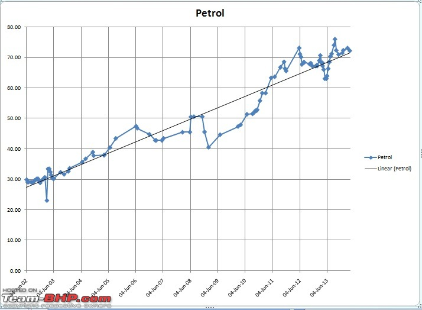
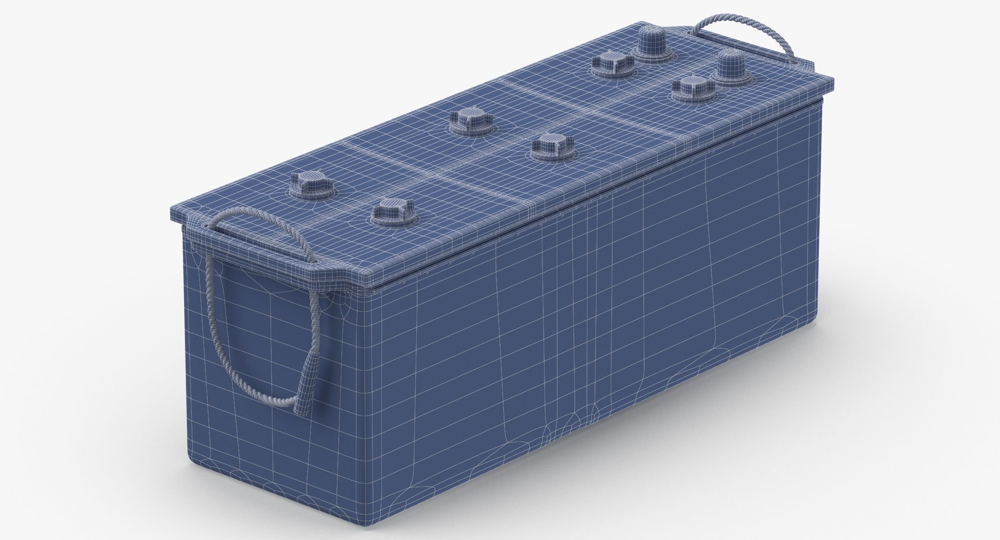
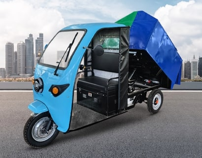
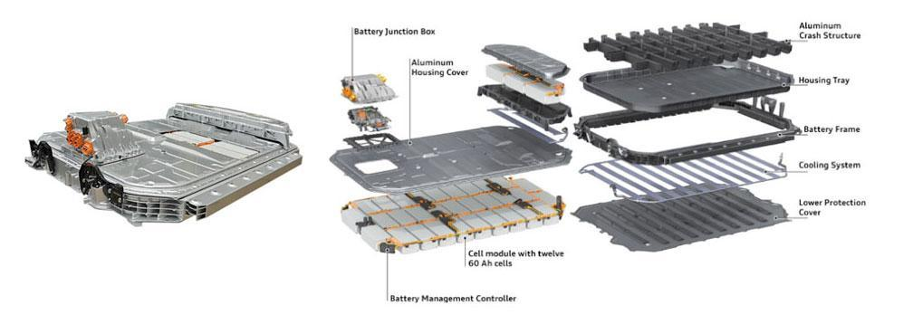
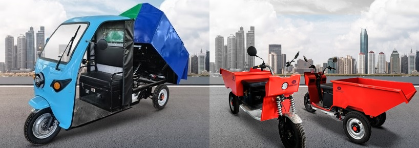
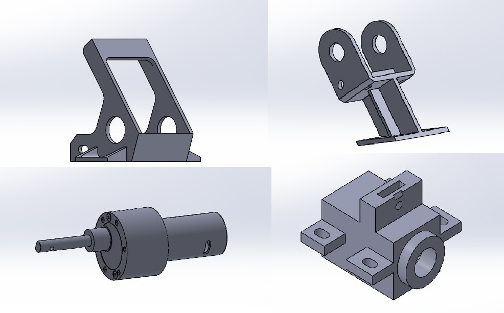

Recent Works
Here are some of my favorite projects I have done lately. Feel free to check them out.
-
FINAL YEAR PROJECTComparative Analysis of Ethanol Content in Petrol from Different Brands and Its Impact on Engine Performance and Fuel Efficiency
-
FINAL YEAR PROJECTDevelopment and Structural Analysis of Battery Enclosure for Car Batteries
-
AUTOMOBILE COMPONENTSAutomobiles Components Customisation for Various Companies and Government Organisations.
-
PROFESSIONAL WORKSVarious Works for VSSC
Comparative Analysis of Ethanol Content in Petrol from Different Brands and Its Impact on Engine Performance and Fuel Efficiency
This project aimed to analyze the ethanol content present in petrol from various fuel brands and study its impact on vehicle performance and fuel efficiency. With the increasing use of ethanol as a blending agent in petrol to reduce emissions and dependence on fossil fuels, understanding its effect on engine performance becomes crucial. Samples from different brands were collected and tested to determine ethanol concentration using laboratory techniques. The project also involved testing the fuel samples in a controlled engine setup to monitor changes in fuel consumption, engine power output, and emission levels. The results provided insights into how varying ethanol content influences combustion efficiency, engine wear, and overall performance, helping consumers and automobile manufacturers make informed choices regarding fuel selection and engine optimization.- Branding
- Product Design

Development and Structural Analysis of Battery Enclosure for Car Batteries
This project focuses on the design and structural analysis of a battery casing for automotive applications, aimed at ensuring mechanical strength, thermal stability, and vibration resistance. The design phase was carried out using SolidWorks, where a detailed 3D model of the battery casing was developed, considering factors such as dimensions, material selection, and ease of assembly. The designed casing was then subjected to structural and thermal analysis using ANSYS software to evaluate its strength, stress distribution, deformation, and thermal behavior under real-world operating conditions. The analysis helped in identifying potential weak points and optimizing the design to enhance durability and performance. The project ultimately aims to provide a robust and efficient battery housing that enhances both battery safety and overall vehicle reliability.

Automobiles Components Customisation for Various Companies and Government Organisations.
At Kerala Automobiles Limited (KAL), this role involves customizing automobile components to meet the specific technical and operational requirements of various private sector clients and government organizations, including reputed institutions like VSSC and other public sector undertakings. The work includes interpreting 2D technical drawings, developing accurate 3D CAD models, and adapting designs for CNC-based manufacturing. Emphasis is placed on precision, quality, and compliance with industry and organizational standards, ensuring each component aligns with the client’s performance, safety, and durability expectations.

Various Works for VSSC
At Kerala Automobiles Limited (KAL), I worked as part of the design team, specializing in the 3D modeling of components for VSSC projects. My role involved converting 2D drawings provided by the engineers into precise 3D models using SolidWorks. These 3D models were then used by the production team to manufacture the components through CNC machining. I collaborated closely with the workers to ensure that the 3D designs were compatible with the CNC processes, optimizing the models for efficient production. Throughout the process, I ensured that the designs met quality standards and adhered to the specifications needed for aerospace applications. Additionally, I was responsible for maintaining accurate design documentation, such as model revisions and technical data, which were critical for seamless communication between the design and manufacturing teams.

Comparative Analysis of Ethanol Content in Petrol from Different Brands and Its Impact on Engine Performance and Fuel Efficiency
This project aimed to analyze the ethanol content present in petrol from various fuel brands and study its impact on vehicle performance and fuel efficiency. With the increasing use of ethanol as a blending agent in petrol to reduce emissions and dependence on fossil fuels, understanding its effect on engine performance becomes crucial. Samples from different brands were collected and tested to determine ethanol concentration using laboratory techniques. The project also involved testing the fuel samples in a controlled engine setup to monitor changes in fuel consumption, engine power output, and emission levels. The results provided insights into how varying ethanol content influences combustion efficiency, engine wear, and overall performance, helping consumers and automobile manufacturers make informed choices regarding fuel selection and engine optimization.

Development and Structural Analysis of Battery Enclosure for Car Batteries
 Dr. Abirami N
Associate Professor, SRMIST
Dr. Abirami N
Associate Professor, SRMIST
I am happy to recommend Bharat Bharat Babu, who was one of my students in the Chemistry course at SRMIST. From the very beginning, Bharat demonstrated a natural curiosity and strong dedication to his studies. His ability to grasp complex chemical concepts and relate them to real-world applications was always impressive.Bharat was not only diligent in his approach to learning but also actively participated in class discussions and problem-solving sessions. His analytical thinking, combined with a genuine enthusiasm for learning, allowed him to excel in the course. He always showed a strong commitment to understanding the subject, which I believe will serve him well in his future academic and professional endeavors.